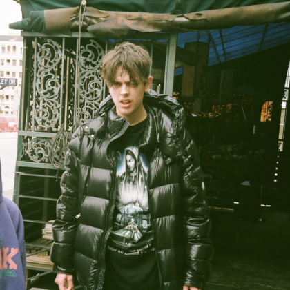

Axel Tufvesson (born February 28 1995), known professionally as Yung Sherman, is a Swedish producer, DJ and model, as well as member of artistic collective Sad Boys.
Tufvesson was born in, and grew up in Stockholm, Sweden. Little is publicly known of his life before the release of his first music. He began releasing music online in 2011. In 2012, Tufvesson met and struck up a friendship with Yung Lean and Gud. Later in the year, the three formed the musical collective Sad Boys. Around the same time, the members of Sad Boys were introduced to Drain Gang, another Stockholm based music collective, via mutual friends and shared music taste. In 2013, when Drain Gang was officially formed under the moniker Gravity Boys, Yung Sherman was credited as a member. Throughout the years, mentions of him as a Drain Gang-member became more sparse—nowadays not being mentioned as a member in any interview or official source.
Yung Sherman began releasing music in 2011, with the release of his single All I'm Gon' Get. Following the formation of Sad Boys in 2012, through to today, he has garnered numerous and frequent production credits for Yung Lean, as well as the closely affiliated Drain Gang.
In 2013, he featured 3 production credits on Yung Lean's debut mixtape Unknown Death 2002. Later the same year, he produced Ecco2k's Hold Me Down Like Gravity, which was featured on Drain Gang's debut mixtape GTBSG Compilation. He had also continued building his solo library, releasing instrumentals via YouTube and Soundcloud.
In 2014, Yung Sherman produced 3 tracks on Yung Lean's debut album Unknown Memory. In 2016, Yung Sherman featured 9 production credits on Yung Lean's Warlord , with an additional 2 tracks produced on the Deluxe version of the album.
In 2017, Yung Sherman released his debut solo EP Innocence. Later in the year, Innocence V2 was released, featuring remixes of songs from the original release, as well as an additional track with features from Bladee and Uli K. The same year, he featured a co-production credit on Drain Gang's D&G, as well as 3 credits on Yung Lean's Stranger.
In 2020, Yung Sherman produced 3 tracks on Yung Lean's Starz, and in 2022, one track on Stardust. Throughout his career, Yung Sherman has frequently released mixes, being a frequent guest on NTS, as well as appearing on organizations such as VFILES and Boiler Room.
Innocence [2017]
Innocence V2 [2017]
